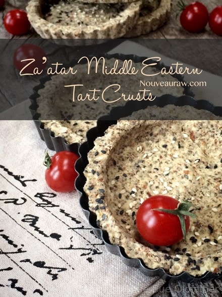

Za’atar Middle Eastern Crispy Tart Crusts (savory crust)

~ raw, vegan, gluten-free ~
Za’atar is a Middle Eastern, tangy, herb-filled spice blend. This particular spice new to me, and all I can is, “Where have you been all my life?!”
From what I have learned, it is one of those blends that vary from country to country, family to family, and cook to cook. And with that bit of knowledge, I breathed a sigh of relief because I can’t go too wrong with it. hehe
After creating a few other recipes with this spice, I decided that it would make a great background flavor for a tart crust shell. And who doesn’t love little savory tarts?! Put your hand down. (hehe)
As you scroll through the ingredient list, you will eventually realize that I used almond pulp as the base for this recipe. I use nut pulps a lot in my “baked” recipes for several reasons.
It is a by-product of making nut milk; therefore, nothing goes to waste. It also adds a great texture to loaves of bread and crackers. Giving them a lighter feel, taste, and crunch.
If you don’t have almond pulp on hand and you don’t have the ambition to create almond milk, you can try to substitute it with ground almonds, but I can’t speak for the end result. If you have been through my site, you will have noticed that I love to experiment, but there are times when I find a “formula” that works great and tastes excellent… so why fix it if it ain’t broken, eh?
This recipe makes 13-14 small tart crusts which sounds like a lot, but I have found that savory tarts such as these freeze beautifully, which then makes it a great staple food to have on hand. I wrap them individually in plastic wrap and then slide them into a labeled ziplock bag. They can be enjoyed as an appetizer or a full-out meal. Fill them with your favorite hummus, raw cheese spread, Not-Tuna spread, fresh veggies, marinated veggies, or whatever strikes your fancy.
I hope you enjoy them. Many blessings, amie sue
 Ingredients:
Ingredients:
Yields 13-14 tart crusts (6 Tbsp per tart crust)
Dry Ingredients:
- 1 cup almond flour
- 1/4 cup black or white sesame seeds
- 2 1/2 Tbsp za’atar
- 3 Tbsp raw coconut flour
- 1 Tbsp caraway seeds
- 3 tsp ground cumin
- 2 tsp sea salt
Wet Ingredients:
- 1 cup chia seeds, soaked 2 cups water
- 1/4 cup water
- 1 Tbsp cold-pressed olive
- 1 Tbsp toasted sesame oil
- 3 Tbsp maple syrup
- 2 Tbsp fresh lemon juice
Hand mix in:
Preparation:
- Soak the chia seeds in 2 cups of water for 15+ minutes. It should be very thick.
- In the food processor fitted with the “S” blade, place the almond flour, sesame seeds, za’atar seasoning, coconut flour, caraway, cumin, and salt. Pulse together until combined.
- Add the soaked chia seeds, water, olive oil, toasted sesame oil, sweetener, and lemon juice. Process till everything is well incorporated. Pour into a large mixing bowl.
- Add the almond pulp and with your hands, mix everything really well. Let the dough rest for about 15 minutes.
- Press 6 Tbsp of dough into a small tart pan. Be sure to take the dough up the edges, creating a ledge.
- Dehydrate at 115 (F) degrees for 6-10 hours or until dry. Remove from pans about 1/2 way through to continue drying.
- These should last several weeks in an airtight container. If they start to moisten a bit, return them to the dehydrator and dry until they firm back up.
To make your own Za’atar Spice:
Yields 1/2 cup
- 3 Tbsp dried thyme
- 2 Tbsp dried lemon peel
- 1 Tbsp sesame seeds
- 1/2 tsp dried oregano
- 1/4 tsp sea salt
Preparation:
- In a spice grinder, pulse the spices together a few times just enough to mix and break up some of the seeds — there should still be many whole seeds visible.
- Store in a cool, dark place for up to six months.
© AmieSue.com